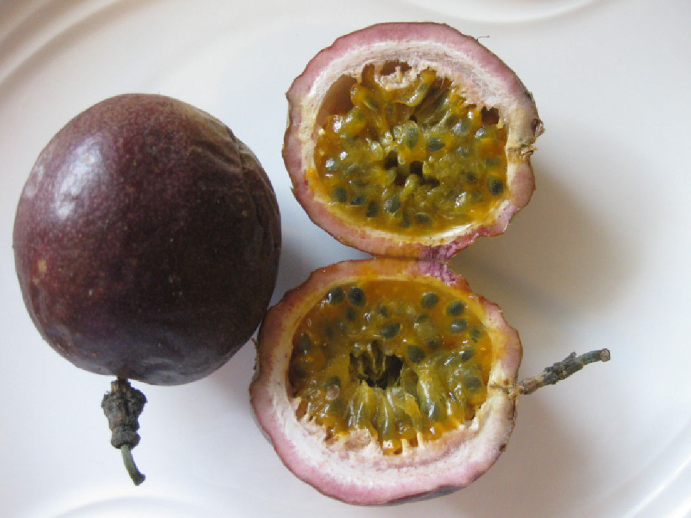
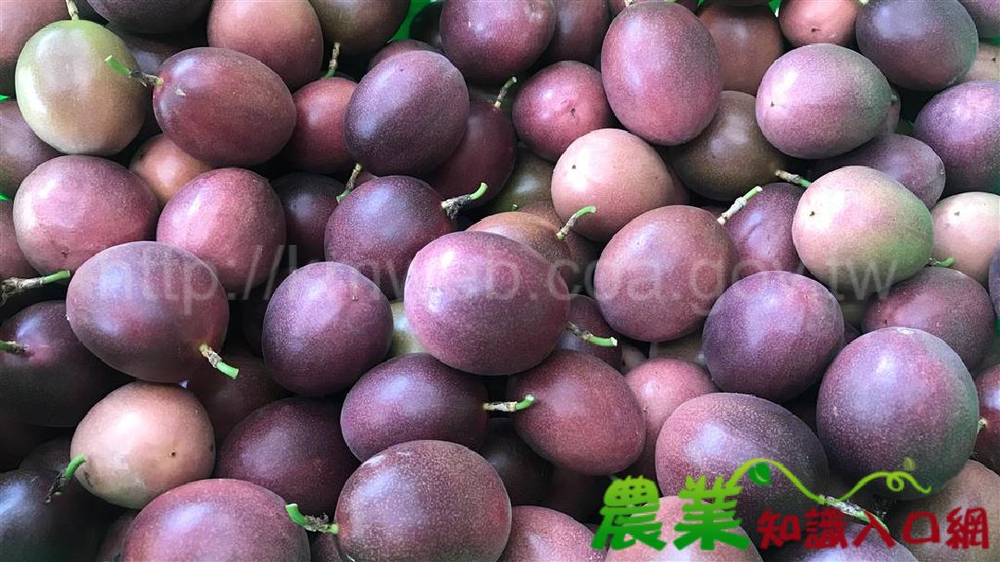
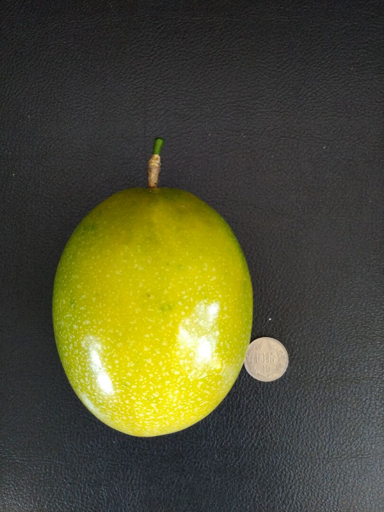
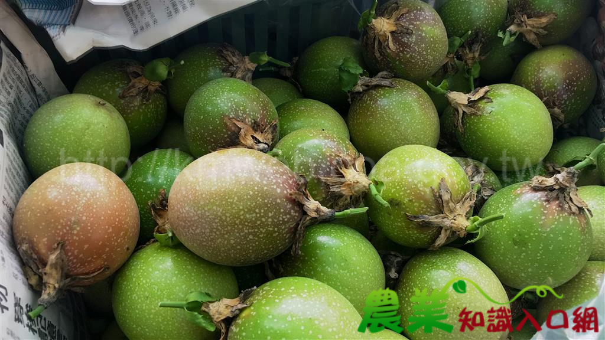
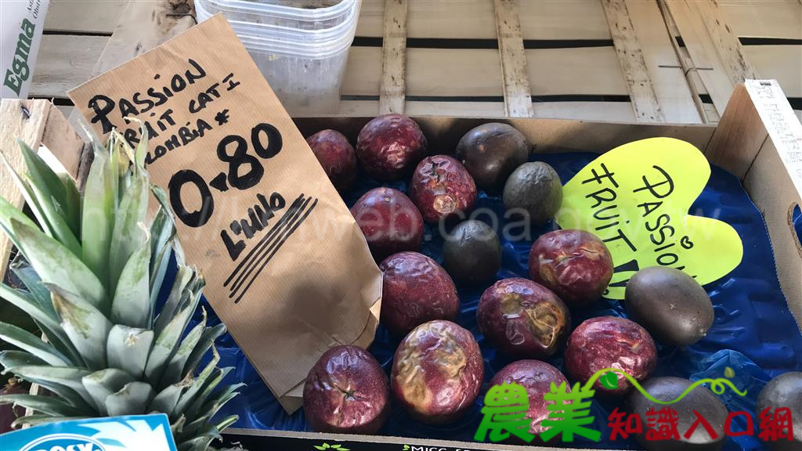
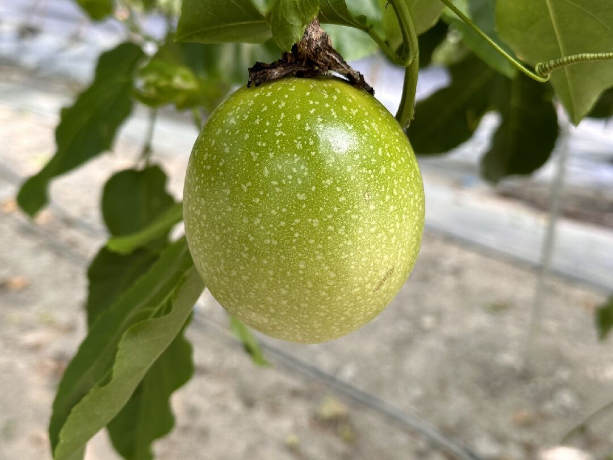
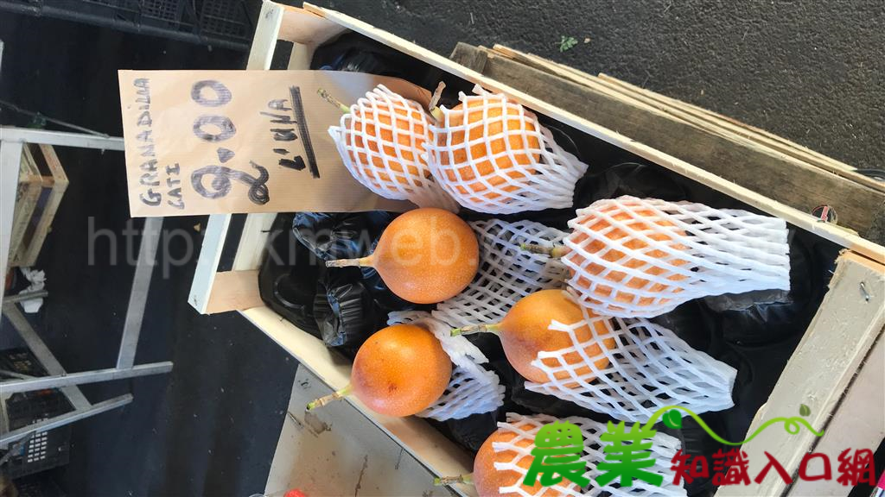
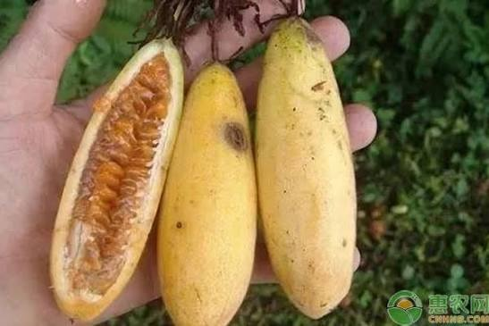
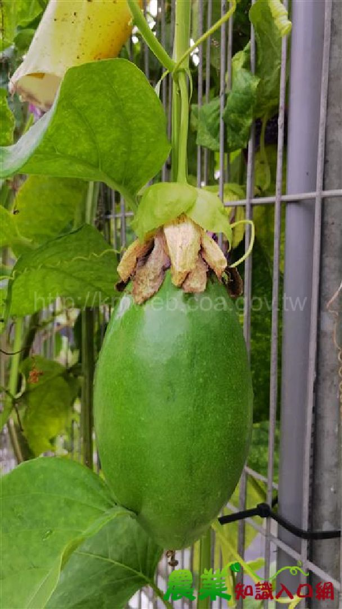

百香果為多年生蔓性果樹（Passiflora 屬、Passifloraceae 科，英名 Passion Fruit），又稱時計果、受難果、西番果等。其果汁香甜、用途多元，可供鮮食及加工用，經濟價值高，有「果汁之王」的美譽。
百香果名稱由來：其花朵形似「時鐘」與「基督受難」之象徵，故稱時計果、受難果。臺灣商業栽培以台農1號為絕對主力，另有滿天星、黃金、香蜜等新興品種。臺灣百香果種苗嫁接技術純熟、品質佳，每年有數百萬株外銷東南亞，為具競爭力之產業。
全臺百香果栽培面積約 975 公頃（114 年），其中南投縣以約 643 公頃、佔全臺 66%居絕對主產區（埔里、水里、仁愛、鹿谷一帶），年產量逾 1.4 萬公噸。產期自 6 月至 12 月，夏秋為盛產高峰。

百香果：外皮紫紅、內部橙黃果肉包覆黑色種子，香氣濃郁（圖：農業部農業知識入口網）
| 縣市 | 種植面積(公頃) | 收量(公斤) | 主要鄉鎮 |
|---|---|---|---|
| 南投縣 | 643.48 | 14,239,824 | 埔里、水里、仁愛、鹿谷 |
| 臺中市 | 57.86 | 1,077,999 | 后里、外埔、新社、東勢 |
| 臺南市 | 46.19 | 696,082 | 柳營、東山 |
| 屏東縣 | 60.81 | 675,318 | 枋寮 |
| 高雄市 | 46.05 | 635,001 | 美濃、六龜 |
| 苗栗縣 | 18.58 | 321,221 | 卓蘭 |
| 嘉義縣 | 31.38 | 296,913 | 番路、竹崎、大林 |
| 臺東縣 | 22.77 | 251,605 | 關山 |
| 彰化縣 | 15.63 | 184,016 | 二林 |
| 雲林縣 | 10.04 | 137,017 | 古坑 |
本圖鑑依農業部農業知識入口網「百香果主題館」收錄 8 個百香果品種，依市場用途分為鮮食主力與加工／特色品種兩類：

台農1號 · 滿天星 · 紫百香果 · 黃金
4 品種
黃百香果 · 甜百香果 · 香蕉百香果 · 香蜜百香果
4 品種食用百香果為臺灣商業栽培與市場流通的主力，以台農1號栽培最廣，另有甜度更高的滿天星、黃金，以及加工用的黃百香果、高山栽培的甜百香果、香蕉百香果等。
台農1號：果皮鮮紅至紫紅，表皮光滑具細密白點（圖：農業部農業知識入口網）
| 項目 | 特徵 |
|---|---|
| 學名 | Passiflora edulis × P. edulis f. flavicarpa |
| 來源 | 1980 年代由紫色種 × 黃色種百香果雜交育成，又稱「雜交種」 |
| 繁殖 | 為保留遺傳特性，以嫁接或扦插法繁殖；商業種苗多以黃色種為嫁接根砧 |
| 果實 | 果皮鮮紅至紫紅色，表皮光滑具細密白點，平均果重 65–75 公克 |
| 果汁 | 約佔總果重 33%，酸度約 1–3%，糖度約 15–19 度 |
| 特性 | 風土適應性介於黃色種與紫色種之間，平地至中海拔 600 公尺山坡地均可栽培；自交親和 |
| 用途 | 果汁香氣足、酸度夠，鮮食及加工皆宜 |

滿天星：表皮白色細密斑點如繁星，故得名「滿天星」（圖：農業部農業知識入口網）
| 項目 | 特徵 |
|---|---|
| 別名 | 蜜糖百香果 |
| 果實 | 果形較台農1號大（80–120 公克），果皮較厚、白點較大，呈鮮紅至淡黃色 |
| 轉色 | 果皮轉色與日照有關，日照充足時整顆呈鮮紅色 |
| 風味 | 相較台農1號甜度高、酸度低，果汁約佔總果重 33% |
| 特性 | 適宜生長溫度 15–33℃，下午開花；無授粉媒介僅部分著果，高溫較易有畸形果 |

紫百香果：果型小、果皮深紫，食味佳香氣足（圖：農業部農業知識入口網）
| 項目 | 特徵 |
|---|---|
| 學名 | Passiflora edulis Sims（英名 gulupa、passion fruit） |
| 別稱 | 紫色種、野生種 |
| 分布 | 臺灣主要分布於中高海拔（500–1,000 公尺）地區，平地適應不良 |
| 特性 | 耐熱性差、較黃色種生長勢弱，但耐寒性較佳；莖葉及捲鬚為綠色；開花期 12 月至翌年 5 月 |
| 果實 | 果型小、果汁量較低約佔總果重 30% |
| 風味 | 食味佳、香氣足，糖度高、酸度低 |
黃百香果：果皮成熟時呈鮮黃色，果汁酸度較高，多用於加工（圖：農業部農業知識入口網）
| 項目 | 特徵 |
|---|---|
| 學名 | Passiflora edulis f. flavicarpa（英名 grenadille、parcha、maracuyá） |
| 別稱 | 黃色種 |
| 分布 | 平地至低中海拔 500 公尺山坡地 |
| 特性 | 植株生長旺盛、適應力良好，但耐寒性稍弱；莖葉及捲鬚呈紫紅色 |
| 授粉 | 花朵較大、雄蕊及柱頭距離遠，不易自花授粉，需人工授粉輔助 |
| 果實 | 果皮成熟時呈鮮黃色，果汁含量約 35%，酸度較高 |
| 用途 | 多用於加工 |

黃金百香果掛果：成熟時果皮呈金黃色（圖：農業部農業知識入口網）
| 項目 | 特徵 |
|---|---|
| 果實 | 成熟時果皮呈金黃色，市售種苗具前述特性品種皆以「黃金」稱之，各品種口感略有差異 |
| 開花 | 花朵為中午至傍晚開放 |
| 掛果期 | 80–100 天 |
| 風味 | 果實甜度高、酸度低 |

甜百香果：果皮光滑橘黃、假種皮白色，味甜酸度低（圖：農業部農業知識入口網）
| 項目 | 特徵 |
|---|---|
| 學名 | Passiflora ligularis（英名 Sweet granadilla、grenadia） |
| 別稱 | 印尼百香果 |
| 來源 | 原產南美洲安地斯山脈高地，不耐高溫，屬較耐寒之品種 |
| 栽培 | 臺灣適合生長於海拔 1,500 公尺以上地區；葉形單葉心形 |
| 果實 | 成熟時表皮光滑、呈橘黃色，果型較大，假種皮呈白色 |
| 風味 | 味道甜、酸度低、略帶香氣，以鮮食用為主；哥倫比亞栽培年產量約 8 公噸/公頃 |

香蕉百香果：果型細長如香蕉、果皮薄軟呈淡黃色（圖：農業部農業知識入口網）
| 項目 | 特徵 |
|---|---|
| 學名 | Passiflora mollissima（英名 Curuba、Banana Passionfruit、tumbo） |
| 名稱 | 因果型細長故得名香蕉百香果 |
| 來源 | 原產南美洲祕魯安地斯山脈高地，為百香果類中較耐寒品種，極不耐熱（適溫 15–18℃） |
| 型態 | 葉型三裂葉深鋸齒狀，花為粉紅色長鐘形 |
| 果實 | 果皮薄且軟，成熟時淡黃色，果重約 100–150 公克，可食假種皮比例高 |
| 風味 | 酸度低，以鮮食為主，年產量約 8 公噸/公頃 |

香蜜百香果果實：果型大、果肉及假種皮皆可食用（圖：農業部農業知識入口網）
| 項目 | 特徵 |
|---|---|
| 果實 | 果型大，平均果重約 250–500 公克，可青果（催熟）或掛果轉色採收 |
| 食用 | 果皮轉黃熟、果肉稍軟時食用品質較佳；除果皮外，果肉及假種皮皆可食用 |
| 果肉 | 假種皮呈淡黃色、內含果汁微酸，果肉略帶特殊香氣 |
| 栽培 | 目前已有農友少量商業化栽培，臺灣中低海拔地區可多年生產 |
| 品種 | 類別 | 果重 | 果皮色 | 糖酸 | 核心特色 |
|---|---|---|---|---|---|
| 台農1號 | 食用 | 65–75g | 鮮紅至紫紅 | 糖15–19度/酸1–3% | 主力 · 鮮食加工皆宜 |
| 滿天星 | 食用 | 80–120g | 鮮紅至淡黃 | 甜高酸低 | 蜜糖 · 白斑繁星 |
| 紫百香果 | 食用 | 果小 | 深紫 | 糖高酸低 | 香氣足 · 高海拔 |
| 黃百香果 | 食用 | — | 鮮黃 | 酸度高 | 加工用 · 需人工授粉 |
| 黃金 | 食用 | — | 金黃 | 甜高酸低 | 掛果80–100天 |
| 甜百香果 | 食用 | 果較大 | 橘黃 | 甜酸低 | 高山種 · 白假種皮 |
| 香蕉百香果 | 食用 | 100–150g | 淡黃 | 酸低 | 細長 · 耐寒 |
| 香蜜百香果 | 食用 | 250–500g | 轉黃 | 微酸 | 大型果 · 果肉可食 |
百香果在北農拍賣市場依品種分為兩大品名代號：百香果（改良種／台農1號）與百香果（蜜糖、滿天星），分級依果實重量訂定。
| 品名 | 品名代碼 | 統一編碼 | 適用範圍 |
|---|---|---|---|
| 百香果（改良種） | 51 | 2030200000515 | 改良種（台農1號） |
| 百香果（蜜糖、滿天星） | 50 | 2030200000508 | 蜜糖、滿天星 |
| 規格 | 大（L） | 中（M） | 小（S） |
|---|---|---|---|
| 果重 | 80 公克以上 | 60–80 公克 | 未達 60 公克 |
| 等級 | 品質標準 |
|---|---|
| 特級 | 同一品種，成熟適度，果形完整，色澤優良，外觀無瑕疵 |
| 優級 | 同一品種，成熟尚適度，果形尚完整，色澤良好，外觀輕微瑕疵 |
| 良級 | 品質次於優級品，具有商品價值者 |
主要參考資料（農業部農業知識入口網 — 百香果主題館）：
產銷資料：農漁生產地圖 — 百香果（114 年各縣市鄉鎮產量）
北農分級包裝：百香果（改良種） ｜ 百香果（蜜糖、滿天星）
所有品種照片與資料均引用自農業部農業知識入口網百香果主題館（kmweb.moa.gov.tw），圖片版權歸原機關所有。